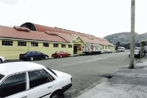
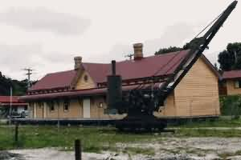
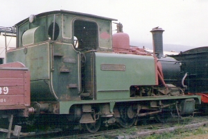
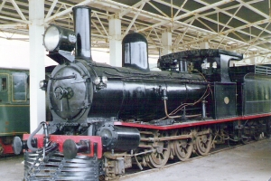
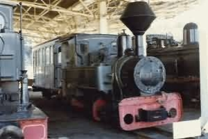
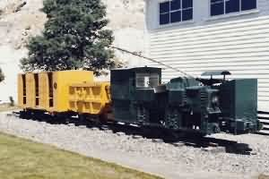

|
NAVIGATION
TOP of Page
MAIN Page
HOME Page
MT LYELL RAILWAY
About Mt Lyell
Steam 3ft 6in
Steam 2ft
Diesel 3ft 6in
Railmotors 3ft 6in
Railmotors 2ft
|
The Mt Lyell Mining and Railway Company (1893-1963)
In 1896 the Mt Lyell Railway was opened from the west coast mining town
of Queenstown to the port of Teepookana on the King River. The line was
extended in 1899 through to the Macquarie Harbour port of Regatta Point.
The railway fell into disuse due to transport of ore over the Mt Lyell Railway,
and was closed in 1963. This railway is now fully restored and running daily
trips along the length of the line as The Wilderness Railway.
| Section |
Opened |
Closed |
| Queenstown to Teepookana Port |
1896 |
1963 |
| Teepookana to Regatta Point |
1899 |
1963 |
 Queenstown Station |
 Strahan Station |
TOP
MAIN
HOME
Mt Lyell Steam Locomotives 3ft 6in Gauge
| Number |
Wheel |
Builder |
Build No |
New |
Scrap |
Notes |
| Contrtr |
0-4-0ST |
Baldwin |
7111/1884 |
1884 |
|
return to VIC |
| No1 |
0-6-0ST |
Hudswell Clark |
271/1884 |
1895 |
1902 |
"Carbine" |
| No2 |
0-4-0T |
Sharp Stewart |
2030/1870 |
1896 |
1923 |
"Malvolio" |
| No3 |
0-6-0ST |
Baldwin |
15174/1897 |
1897 |
1922 |
|
| No4 |
0-6-0ST |
Baldwin |
15814/1897 |
1898 |
1954 |
|
| No5 |
0-6-0ST |
Baldwin |
15816/1897 |
1898 |
1938 |
|
| No6 |
2-6-4T |
NZGR |
92/1909
|
1951 |
1959 |
ex TGR DS-4 |
| No7 |
2-6-4T |
NZGR |
61/1904 |
1952 |
1959 |
ex TGR DS-1 |
| ABT 1 |
0-4-2T |
Dubs & Co. |
3369/1896 |
1896 |
1963 |
Zeehan Museum |
| ABT 2 |
0-4-2T |
Dubs & Co. |
3594/1898 |
1899 |
1963 |
Hobart Museum |
| ABT 3 |
0-4-2T |
Dubs & Co. |
3730/1898 |
1899 |
1963 |
Wilderness Rail |
| ABT 4 |
0-4-2T |
Dubs & Co. |
4085/1901 |
1899 |
1963 |
Scrapped |
| ABT 5 |
0-4-2T |
Dubs & Co. |
24418/1938 |
1938 |
1963 |
to Victoria |
 Dubs ABT-2 loco at Hobart |
 L Class at Zeehan Museum |
TOP
MAIN
HOME
Mt Lyell Steam Locomotives 2ft Gauge
| Number |
Wheel |
Builder |
Build No |
New |
Scrap |
Notes |
No1 |
0-4-0WT |
Krauss |
2591/1891 |
1895 |
1908 |
to VIC |
No2 |
0-4-0WT |
Krauss |
3267/1895 |
1896 |
1909 |
to VIC |
No3 |
0-4-0WT |
Krauss |
3549/1897 |
1897 |
1909 |
Sold 1910 |
No4 |
0-4-0WT |
Krauss |
3644/1897 |
1897 |
|
to QLD |
No5 |
0-4-0WT |
Krauss |
3729/1897 |
1898 |
1933 |
to WA |
No6 |
0-4-0WT |
Krauss |
4387/1900 |
1901 |
1921 |
to SA |
No6 #2 |
0-4-0WT |
Krauss |
4087/1899 |
1903 |
1943 |
Renison Mines |
No7 |
0-4-0WT |
Krauss |
5479/1906 |
1906 |
1954 |
Scrapped |
No8 |
0-4-0WT |
Krauss |
5480/1906 |
1908 |
1963 |
Zeehan Museum |
No9 |
0-4-0WT |
Krauss |
5988/1908 |
1908 |
1947 |
Cmwlth Carbide |
No10 |
0-4-0WT |
Krauss |
6067/1910 |
1910 |
|
Second River |
 Krauss No8 at Zeehan Museum |
 Underground Train at Queenstown |
TOP
MAIN
HOME
Mt Lyell Diesel Locomotives 3ft 6in Gauge
| Number |
Wheel |
Builder |
Build No |
New |
Scrap |
Notes |
Diesel |
B |
Ruston Hornby |
187072 |
1938 |
1963 |
Don River 48HP |
Diesel |
C |
Vulcan Drewry |
2405 |
1953 |
1963 |
Wilderness Rail |
Diesel |
C |
Vulcan Drewry |
2406 |
1953 |
1963 |
to TGR 204HP |
|